High performance motion platform
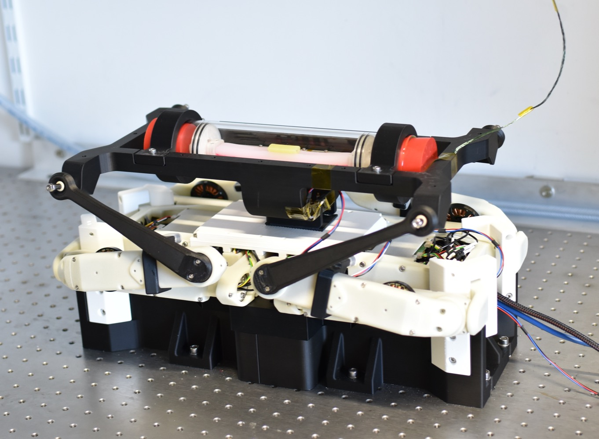
YouTube | Bilibili
Viscous damping in legged locomotion
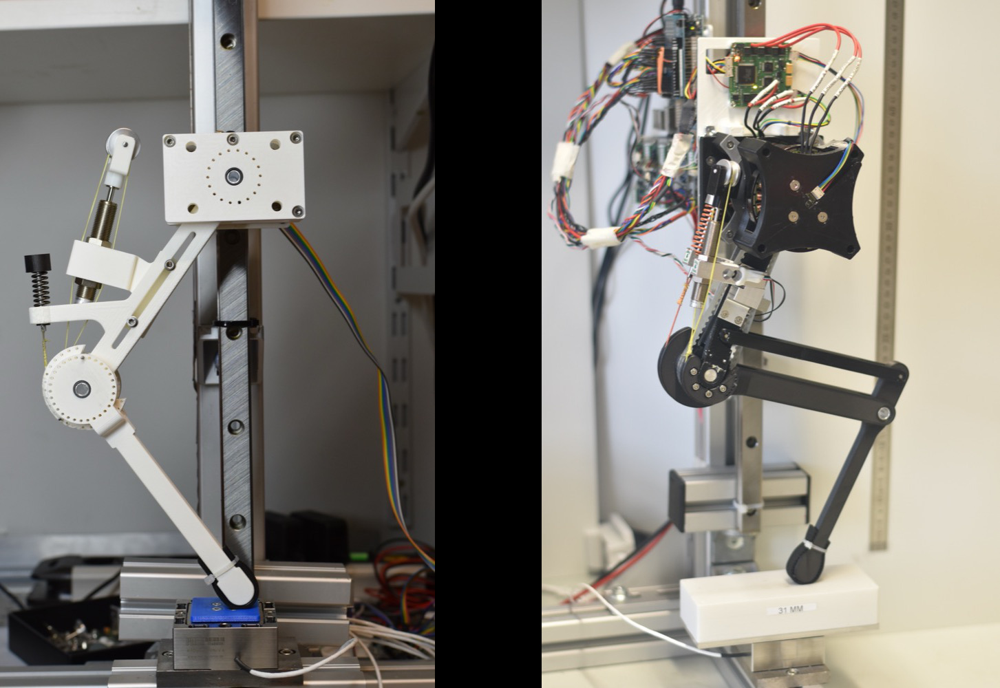
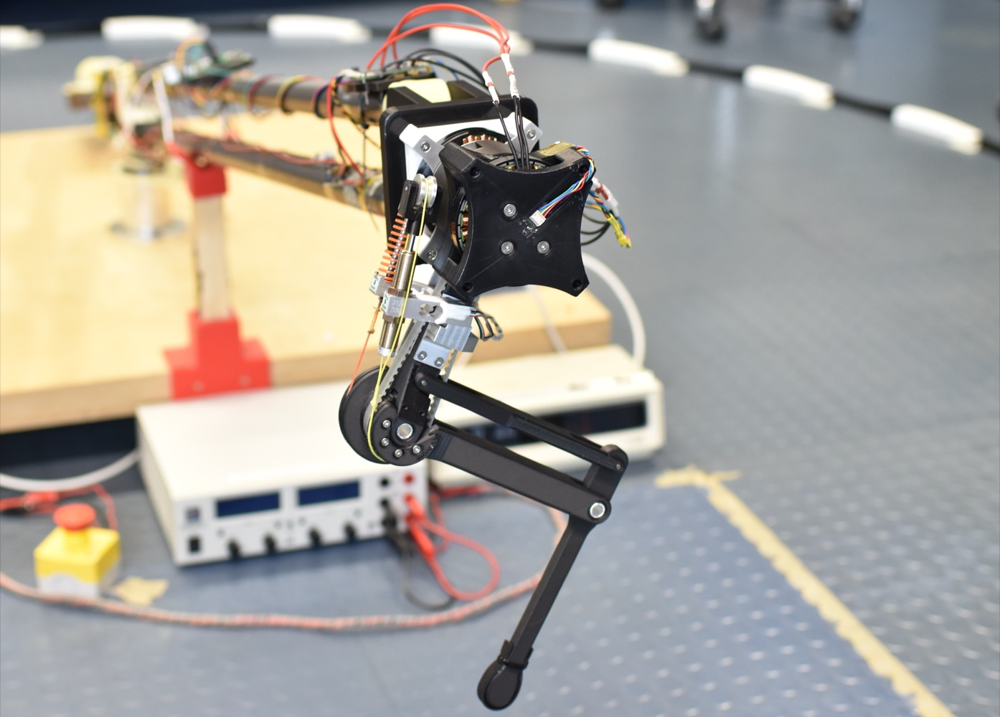
YouTube 1 | YouTube 2 | Bilibili | Publication 1 | Publication 2 | Publication 3
6-axis robot arm - Sechs
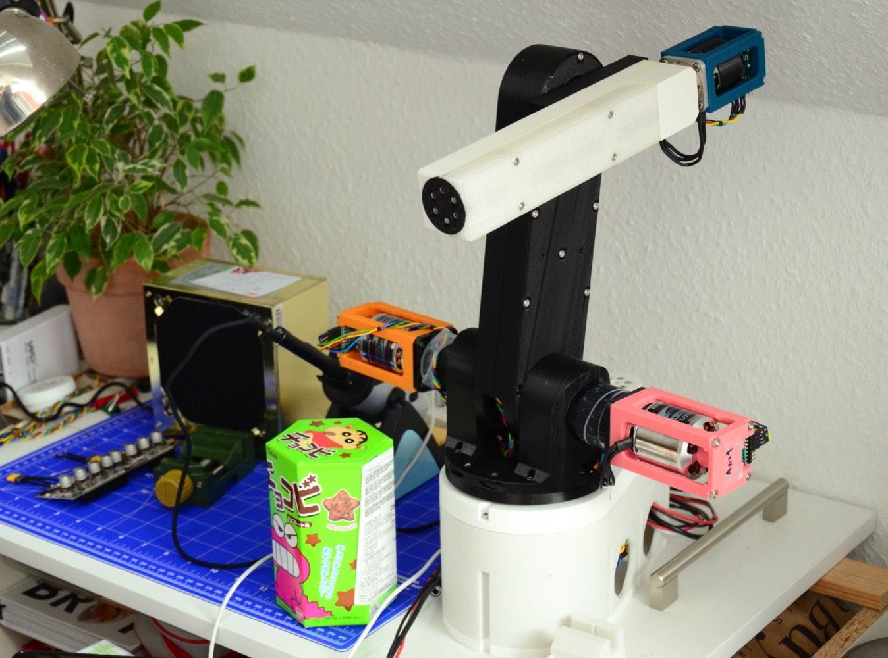
YouTube | Bilibili
5-axis robot arm - CRS A255
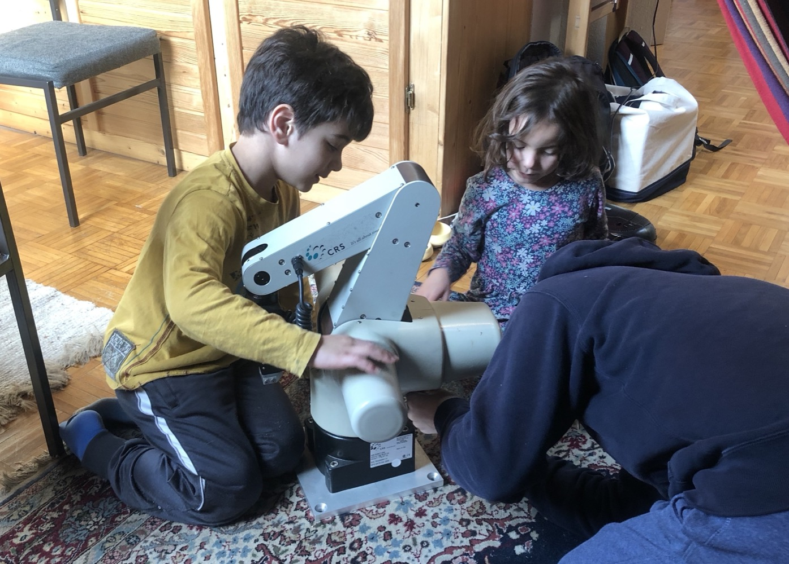
YouTube | Bilibili
Bipedal robot
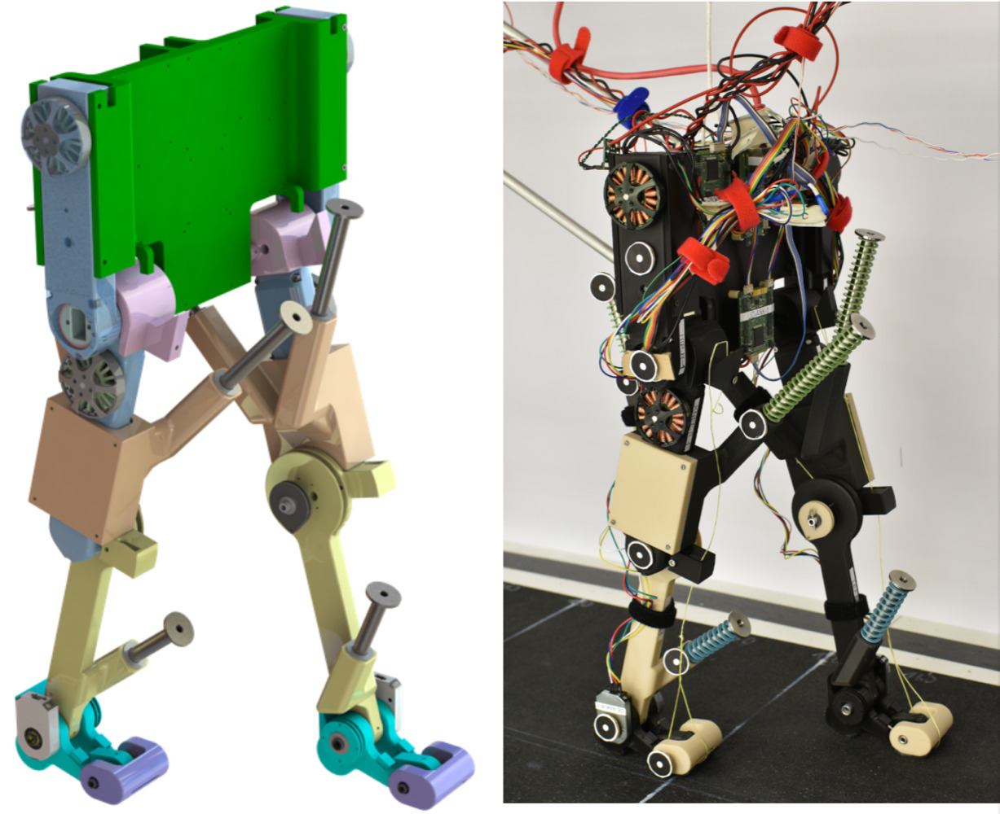
YouTube | Bilibili | Publication
Adaptive feet
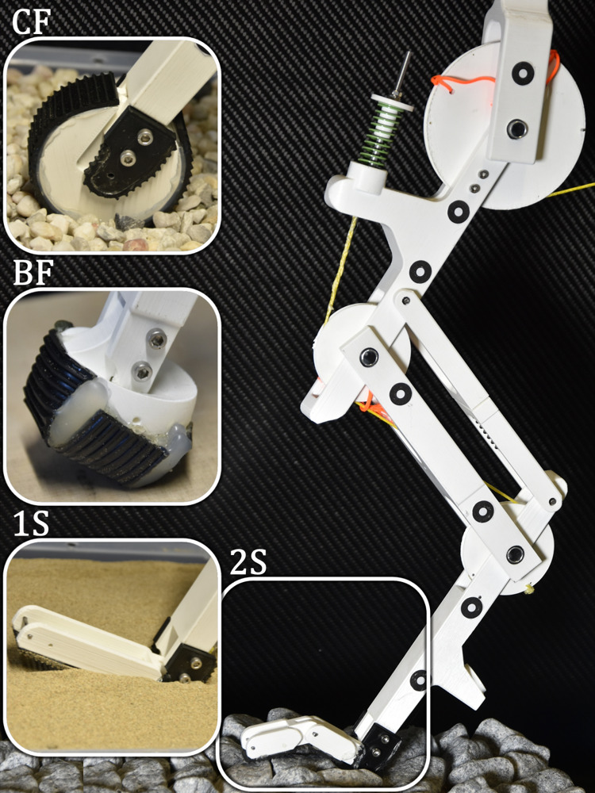
YouTube | Publication
SELDA hopper
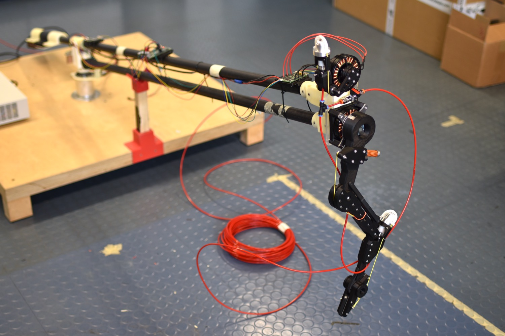
YouTube | YouTube | Publication
Pin array gripper
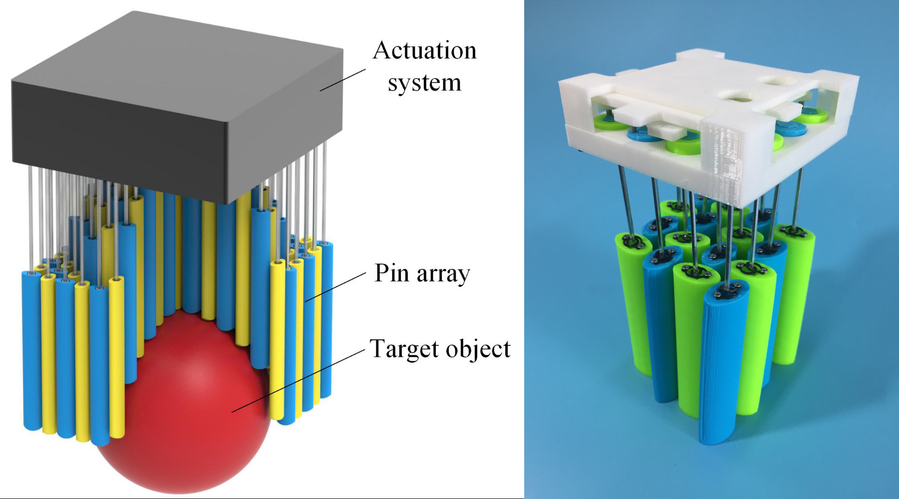
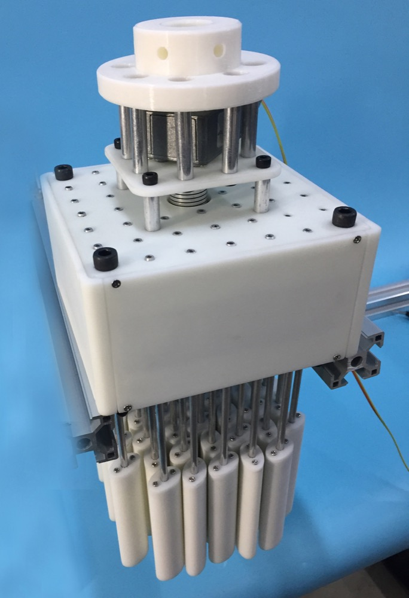
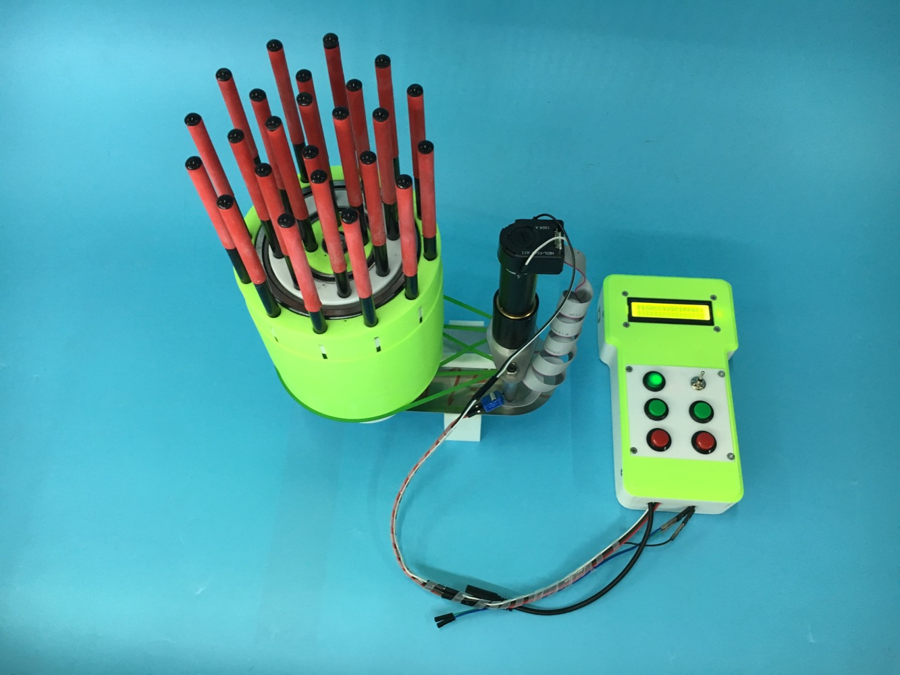
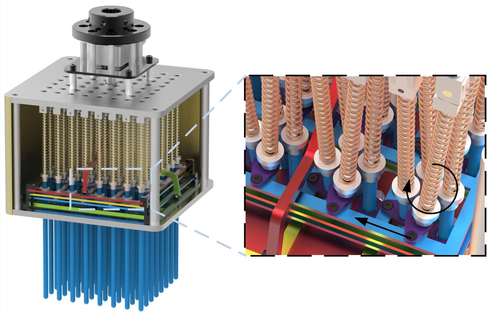
YouTube 1 | YouTube 2 | Bilibili 1 | Bilibili 2 | Publication 1 | Publication 2 | Publication 3 | Publication 4 | Publication 5
1-dof motion simulator
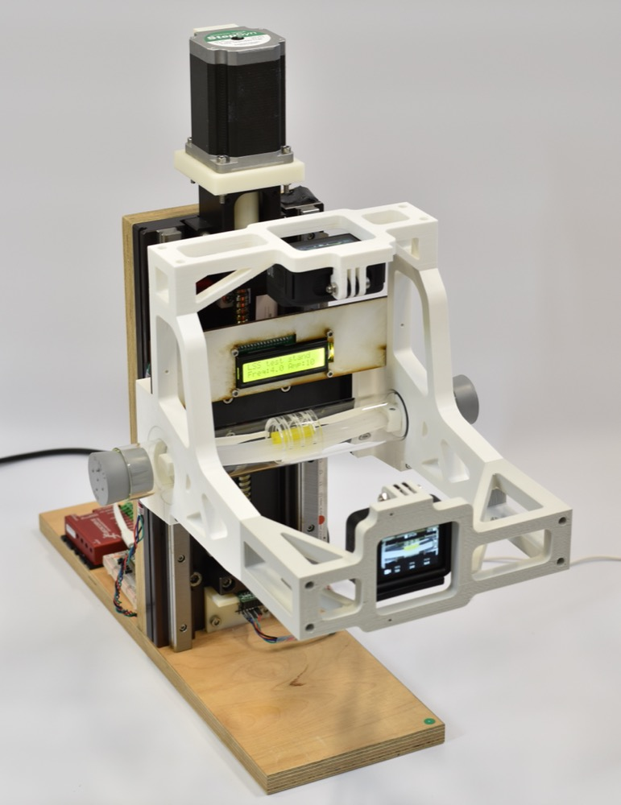
Github
Intraspinal mechanosensing in avians
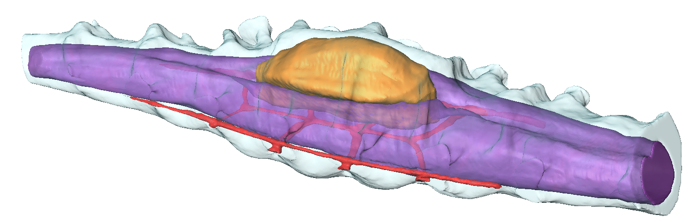
YouTube | Publication
High-throughput screening (HTS)
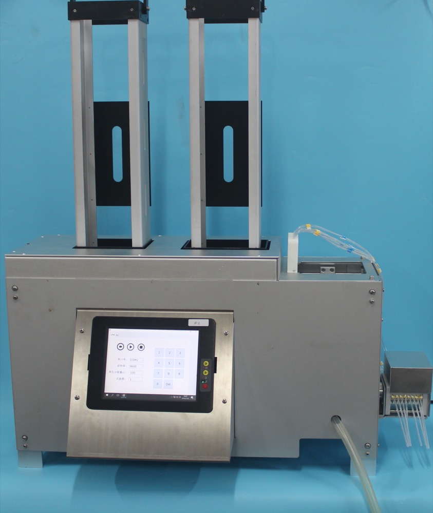
YouTube_TBD | Publication